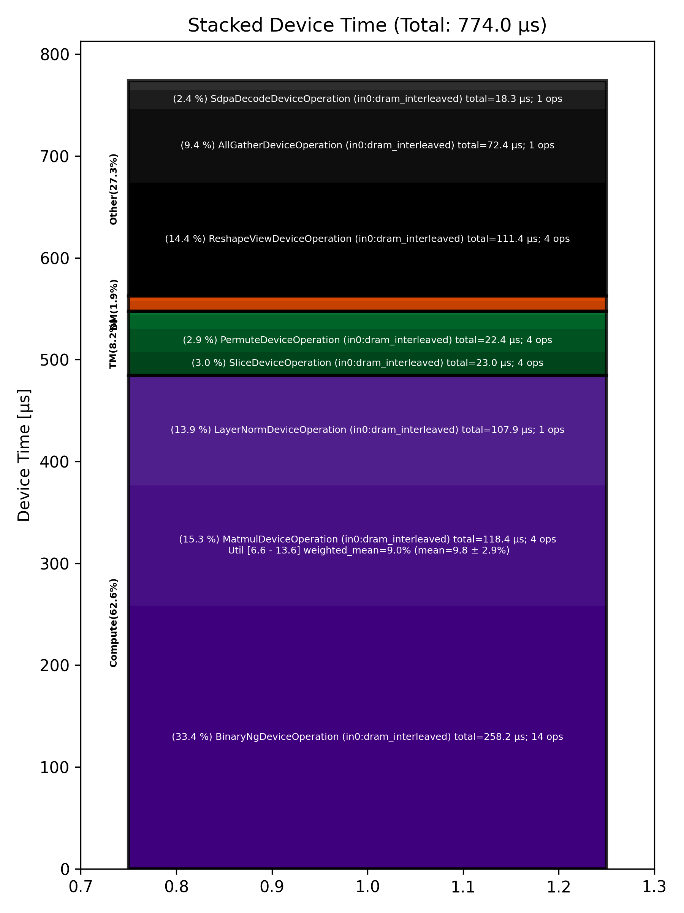

🚀 Performance Report 🚀 ======================== ID Total % Bound OP Code Device Device Time Op-to-Op Gap Cores DRAM DRAM % FLOPs FLOPs % Math Fidelity ------------------------------------------------------------------------------------------------------------------------------------------------------------------------- 25 1.2 % LayerNormDeviceOperation 23 108 μs 1 BF16, BF16 => BF16 57 0.5 % SLOW MatmulDeviceOperation 32 x 2880 x 512 23 44 μs 1 μs 16 39 GB/s 13.4 % 2.2 TFLOPs 6.6 % HiFi2 BF16 x BFP8 => BF16 73 0.2 % ReshapeViewDeviceOperation 7 18 μs 1 μs 72 BF16 => BF16 121 0.1 % SliceDeviceOperation 23 10 μs 1 μs 72 BF16 => BF16 133 0.3 % BinaryNgDeviceOperation 3 28 μs 1 μs 72 BF16, BF16 => BF16 169 0.1 % SliceDeviceOperation 7 9 μs 1 μs 72 BF16 => BF16 222 0.3 % BinaryNgDeviceOperation 28 28 μs 1 μs 72 BF16, BF16 => BF16 233 0.2 % BinaryNgDeviceOperation 7 14 μs 1 μs 72 BF16, BF16 => BF16 278 0.3 % BinaryNgDeviceOperation 20 28 μs 1 μs 72 BF16, BF16 => BF16 311 2.7 % BinaryNgDeviceOperation 21 28 μs 206 μs 72 BF16, BF16 => BF16 335 3.0 % BinaryNgDeviceOperation 13 14 μs 246 μs 72 BF16, BF16 => BF16 361 3.2 % ConcatDeviceOperation 7 12 μs 268 μs 72 BF16, BF16 => BF16 405 7.2 % SLOW MatmulDeviceOperation 32 x 2880 x 64 19 30 μs 607 μs 2 13 GB/s 4.3 % 0.4 TFLOPs 9.6 % HiFi2 BF16 x BFP8 => BF16 447 1.5 % ReshapeViewDeviceOperation 29 5 μs 123 μs 64 BF16 => BF16 479 2.0 % SliceDeviceOperation 29 2 μs 171 μs 32 BF16 => BF16 497 2.8 % PermuteDeviceOperation 15 4 μs 242 μs 32 BF16 => BF16 525 1.4 % BinaryNgDeviceOperation 11 6 μs 114 μs 72 BF16, BF16 => BF16 547 1.9 % SliceDeviceOperation 1 2 μs 162 μs 32 BF16 => BF16 578 2.8 % PermuteDeviceOperation 0 4 μs 240 μs 32 BF16 => BF16 635 1.1 % BinaryNgDeviceOperation 25 6 μs 90 μs 72 BF16, BF16 => BF16 646 1.9 % BinaryNgDeviceOperation 4 3 μs 166 μs 72 BF16, BF16 => BF16 705 3.0 % BinaryNgDeviceOperation 31 6 μs 257 μs 72 BF16, BF16 => BF16 721 2.9 % BinaryNgDeviceOperation 15 6 μs 246 μs 72 BF16, BF16 => BF16 766 1.1 % BinaryNgDeviceOperation 28 3 μs 91 μs 72 BF16, BF16 => BF16 793 1.9 % ConcatDeviceOperation 23 2 μs 164 μs 64 BF16, BF16 => BF16 822 3.4 % InterleavedToShardedDeviceOperation 20 1 μs 297 μs 32 BF16 => BF16 836 2.7 % PagedUpdateCacheDeviceOperation 2 5 μs 237 μs 32 BF16, BF16 => BF16 883 6.4 % SLOW MatmulDeviceOperation 32 x 2880 x 64 17 30 μs 534 μs 2 13 GB/s 4.3 % 0.4 TFLOPs 9.6 % HiFi2 BF16 x BFP8 => BF16 905 1.2 % ReshapeViewDeviceOperation 7 5 μs 99 μs 64 BF16 => BF16 947 2.2 % PermuteDeviceOperation 17 5 μs 185 μs 64 BF16 => BF16 965 3.0 % InterleavedToShardedDeviceOperation 3 1 μs 259 μs 32 BF16 => BF16 1023 2.6 % PagedUpdateCacheDeviceOperation 29 5 μs 222 μs 32 BF16, BF16 => BF16 1048 1.3 % PermuteDeviceOperation 22 9 μs 107 μs 72 BF16 => BF16 1077 3.7 % SdpaDecodeDeviceOperation 19 18 μs 304 μs 72 BF16, BF16 => BF16 1099 1.6 % InterleavedToShardedDeviceOperation 9 1 μs 136 μs 32 BF16 => BF16 1151 2.7 % NLPConcatHeadsDecodeDeviceOperation 29 4 μs 233 μs 8 BF16 => BF16 1161 3.0 % ShardedToInterleavedDeviceOperation 7 1 μs 265 μs 8 BF16 => BF16 1206 6.9 % SLOW MatmulDeviceOperation 32 x 512 x 2880 20 15 μs 594 μs 45 112 GB/s 39.0 % 6.3 TFLOPs 13.6 % HiFi4 BF16 x BFP8 => BF16 1218 5.3 % AllGatherDeviceOperation 0 72 μs 390 μs 24 BF16 => BF16 1269 0.7 % FastReduceNCDeviceOperation 19 10 μs 56 μs 72 BF16 => BF16 1294 2.2 % BinaryNgDeviceOperation 12 5 μs 188 μs 72 BF16, BF16 => BF16 1322 4.8 % ReshapeViewDeviceOperation 8 83 μs 341 μs 72 BF16 => BF16 1346 2.9 % BinaryNgDeviceOperation 0 83 μs 174 μs 72 BF16, BF16 => BF16 ------------------------------------------------------------------------------------------------------------------------------------------------------------------------- 100.0 % 43 device ops, 0 host ops, 0 signposts 774 μs 8,019 μs 📊 Stacked report 📊 ==================== Total % Op Code Device Time Sum Op Count Op Category Min FLOPs Max FLOPs Mean FLOPs Std FLOPs Weighted Mean FLOPs ----------------------------------------------------------------------------------------------------------------------------------------------------------------------------- 33.36 % BinaryNgDeviceOperation (in0:dram_interleaved) 258.24 μs 14 Compute 15.30 % MatmulDeviceOperation (in0:dram_interleaved) 118.41 μs 4 Compute 6.56 % 13.56 % 9.84 % 2.87 % 8.99 % 14.40 % ReshapeViewDeviceOperation (in0:dram_interleaved) 111.43 μs 4 Other 13.94 % LayerNormDeviceOperation (in0:dram_interleaved) 107.86 μs 1 Compute 9.35 % AllGatherDeviceOperation (in0:dram_interleaved) 72.41 μs 1 Other 2.97 % SliceDeviceOperation (in0:dram_interleaved) 22.98 μs 4 TM 2.90 % PermuteDeviceOperation (in0:dram_interleaved) 22.41 μs 4 TM 2.36 % SdpaDecodeDeviceOperation (in0:dram_interleaved) 18.27 μs 1 Other 1.81 % ConcatDeviceOperation (in0:dram_interleaved) 13.98 μs 2 TM 1.25 % PagedUpdateCacheDeviceOperation (in0:dram_interleaved) 9.65 μs 2 DM 1.24 % FastReduceNCDeviceOperation (in0:dram_interleaved) 9.57 μs 1 Other 0.53 % InterleavedToShardedDeviceOperation (in0:dram_interleaved) 4.14 μs 3 DM 0.48 % NLPConcatHeadsDecodeDeviceOperation (in0:height_sharded) 3.72 μs 1 TM 0.13 % ShardedToInterleavedDeviceOperation (in0:width_sharded) 0.98 μs 1 DM -----------------------------------------------------------------------------------------------------------------------------------------------------------------------------
